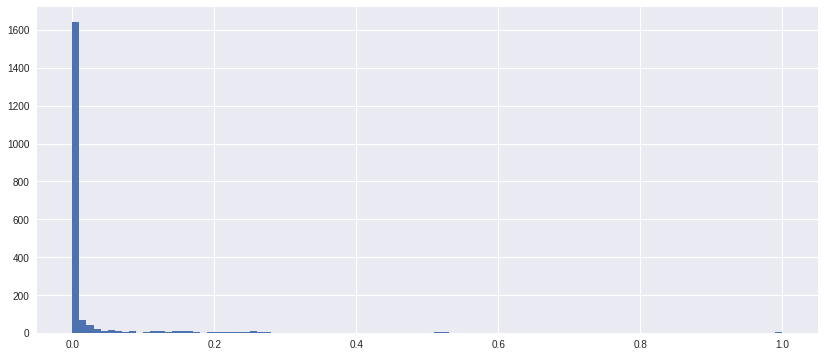
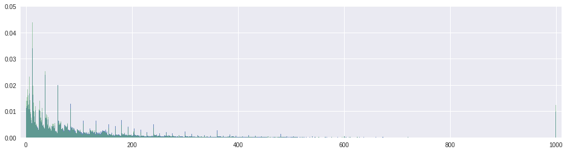
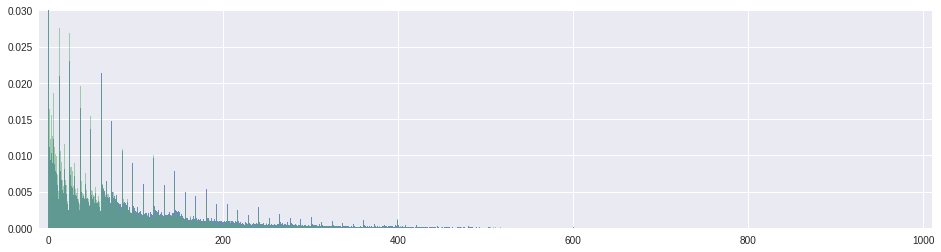
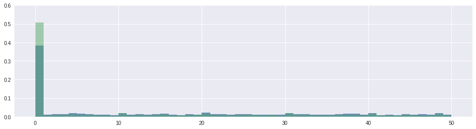
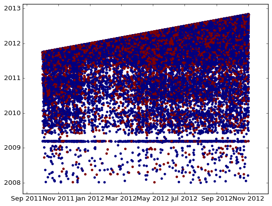

import os
import numpy as np
import pandas as pd
from tqdm import tqdm_notebook
import matplotlib.pyplot as plt
%matplotlib inline
import warnings
warnings.filterwarnings('ignore')
import seabornThis is a notebook, used in the screencast video. Note, that the data files are not present here in Jupyter hub and you will not be able to run it. But you can always download the notebook to your local machine as well as the competition data and make it interactive. Competition data can be found here: https://www.kaggle.com/c/springleaf-marketing-response/data
def autolabel(arrayA):
''' label each colored square with the corresponding data value.
If value > 20, the text is in black, else in white.
'''
arrayA = np.array(arrayA)
for i in range(arrayA.shape[0]):
for j in range(arrayA.shape[1]):
plt.text(j,i, "%.2f"%arrayA[i,j], ha='center', va='bottom',color='w')
def hist_it(feat):
plt.figure(figsize=(16,4))
feat[Y==0].hist(bins=range(int(feat.min()),int(feat.max()+2)),normed=True,alpha=0.8)
feat[Y==1].hist(bins=range(int(feat.min()),int(feat.max()+2)),normed=True,alpha=0.5)
plt.ylim((0,1))
def gt_matrix(feats,sz=16):
a = []
for i,c1 in enumerate(feats):
b = []
for j,c2 in enumerate(feats):
mask = (~train[c1].isnull()) & (~train[c2].isnull())
if i>=j:
b.append((train.loc[mask,c1].values>=train.loc[mask,c2].values).mean())
else:
b.append((train.loc[mask,c1].values>train.loc[mask,c2].values).mean())
a.append(b)
plt.figure(figsize = (sz,sz))
plt.imshow(a, interpolation = 'None')
_ = plt.xticks(range(len(feats)),feats,rotation = 90)
_ = plt.yticks(range(len(feats)),feats,rotation = 0)
autolabel(a)def hist_it1(feat):
plt.figure(figsize=(16,4))
feat[Y==0].hist(bins=100,range=(feat.min(),feat.max()),normed=True,alpha=0.5)
feat[Y==1].hist(bins=100,range=(feat.min(),feat.max()),normed=True,alpha=0.5)
plt.ylim((0,1))Read the data
train = pd.read_csv('train.csv.zip')
Y = train.targettest = pd.read_csv('test.csv.zip')
test_ID = test.IDData overview
Probably the first thing you check is the shapes of the train and test matrices and look inside them.
print 'Train shape', train.shape
print 'Test shape', test.shapeTrain shape (145231, 1934)
Test shape (145232, 1933)train.head()| ID | VAR_0001 | VAR_0002 | VAR_0003 | VAR_0004 | VAR_0005 | VAR_0006 | VAR_0007 | VAR_0008 | VAR_0009 | ... | VAR_1926 | VAR_1927 | VAR_1928 | VAR_1929 | VAR_1930 | VAR_1931 | VAR_1932 | VAR_1933 | VAR_1934 | target | |
|---|---|---|---|---|---|---|---|---|---|---|---|---|---|---|---|---|---|---|---|---|---|
| 0 | 2 | H | 224 | 0 | 4300 | C | 0.0 | 0.0 | False | False | ... | 98 | 98 | 998 | 999999998 | 998 | 998 | 9998 | 9998 | IAPS | 0 |
| 1 | 4 | H | 7 | 53 | 4448 | B | 1.0 | 0.0 | False | False | ... | 98 | 98 | 998 | 999999998 | 998 | 998 | 9998 | 9998 | IAPS | 0 |
| 2 | 5 | H | 116 | 3 | 3464 | C | 0.0 | 0.0 | False | False | ... | 98 | 98 | 998 | 999999998 | 998 | 998 | 9998 | 9998 | IAPS | 0 |
| 3 | 7 | H | 240 | 300 | 3200 | C | 0.0 | 0.0 | False | False | ... | 98 | 98 | 998 | 999999998 | 998 | 998 | 9998 | 9998 | RCC | 0 |
| 4 | 8 | R | 72 | 261 | 2000 | N | 0.0 | 0.0 | False | False | ... | 98 | 98 | 998 | 999999998 | 998 | 998 | 9998 | 9998 | BRANCH | 1 |
5 rows × 1934 columns
test.head()| ID | VAR_0001 | VAR_0002 | VAR_0003 | VAR_0004 | VAR_0005 | VAR_0006 | VAR_0007 | VAR_0008 | VAR_0009 | ... | VAR_1925 | VAR_1926 | VAR_1927 | VAR_1928 | VAR_1929 | VAR_1930 | VAR_1931 | VAR_1932 | VAR_1933 | VAR_1934 | |
|---|---|---|---|---|---|---|---|---|---|---|---|---|---|---|---|---|---|---|---|---|---|
| 0 | 1 | R | 360 | 25 | 2251 | B | 2.0 | 2.0 | False | False | ... | 0 | 98 | 98 | 998 | 999999998 | 998 | 998 | 9998 | 9998 | IAPS |
| 1 | 3 | R | 74 | 192 | 3274 | C | 2.0 | 3.0 | False | False | ... | 0 | 98 | 98 | 998 | 999999998 | 998 | 998 | 9998 | 9998 | IAPS |
| 2 | 6 | R | 21 | 36 | 3500 | C | 1.0 | 1.0 | False | False | ... | 0 | 98 | 98 | 998 | 999999998 | 998 | 998 | 9998 | 9998 | IAPS |
| 3 | 9 | R | 8 | 2 | 1500 | B | 0.0 | 0.0 | False | False | ... | 0 | 98 | 98 | 998 | 999999998 | 998 | 998 | 9998 | 9998 | IAPS |
| 4 | 10 | H | 91 | 39 | 84500 | C | 8.0 | 3.0 | False | False | ... | 0 | 98 | 98 | 998 | 999999998 | 998 | 998 | 9998 | 9998 | IAPS |
5 rows × 1933 columns
There are almost 2000 anonymized variables! It’s clear, some of them are categorical, some look like numeric. Some numeric feateures are integer typed, so probably they are event conters or dates. And others are of float type, but from the first few rows they look like integer-typed too, since fractional part is zero, but pandas treats them as float since there are NaN values in that features.
From the first glance we see train has one more column target which we should not forget to drop before fitting a classifier. We also see ID column is shared between train and test, which sometimes can be succesfully used to improve the score.
It is also useful to know if there are any NaNs in the data. You should pay attention to columns with NaNs and the number of NaNs for each row can serve as a nice feature later.
# Number of NaNs for each object
train.isnull().sum(axis=1).head(15)0 25
1 19
2 24
3 24
4 24
5 24
6 24
7 24
8 16
9 24
10 22
11 24
12 17
13 24
14 24
dtype: int64# Number of NaNs for each column
train.isnull().sum(axis=0).head(15)ID 0
VAR_0001 0
VAR_0002 0
VAR_0003 0
VAR_0004 0
VAR_0005 0
VAR_0006 56
VAR_0007 56
VAR_0008 56
VAR_0009 56
VAR_0010 56
VAR_0011 56
VAR_0012 56
VAR_0013 56
VAR_0014 56
dtype: int64Just by reviewing the head of the lists we immediately see the patterns, exactly 56 NaNs for a set of variables, and 24 NaNs for objects.
Dataset cleaning
Remove constant features
All 1932 columns are anonimized which makes us to deduce the meaning of the features ourselves. We will now try to clean the dataset.
It is usually convenient to concatenate train and test into one dataframe and do all feature engineering using it.
traintest = pd.concat([train, test], axis = 0)First we schould look for a constant features, such features do not provide any information and only make our dataset larger.
# `dropna = False` makes nunique treat NaNs as a distinct value
feats_counts = train.nunique(dropna = False)feats_counts.sort_values()[:10]VAR_0213 1
VAR_0207 1
VAR_0840 1
VAR_0847 1
VAR_1428 1
VAR_1165 2
VAR_0438 2
VAR_1164 2
VAR_1163 2
VAR_1162 2
dtype: int64We found 5 constant features. Let’s remove them.
constant_features = feats_counts.loc[feats_counts==1].index.tolist()
print (constant_features)
traintest.drop(constant_features,axis = 1,inplace=True)['VAR_0207', 'VAR_0213', 'VAR_0840', 'VAR_0847', 'VAR_1428']Remove duplicated features
Fill NaNs with something we can find later if needed.
traintest.fillna('NaN', inplace=True)Now let’s encode each feature, as we discussed.
train_enc = pd.DataFrame(index = train.index)
for col in tqdm_notebook(traintest.columns):
train_enc[col] = train[col].factorize()[0]We could also do something like this:
# train_enc[col] = train[col].map(train[col].value_counts())The resulting data frame is very very large, so we cannot just transpose it and use .duplicated. That is why we will use a simple loop.
dup_cols = {}
for i, c1 in enumerate(tqdm_notebook(train_enc.columns)):
for c2 in train_enc.columns[i + 1:]:
if c2 not in dup_cols and np.all(train_enc[c1] == train_enc[c2]):
dup_cols[c2] = c1dup_cols{'VAR_0009': 'VAR_0008',
'VAR_0010': 'VAR_0008',
'VAR_0011': 'VAR_0008',
'VAR_0012': 'VAR_0008',
'VAR_0013': 'VAR_0006',
'VAR_0018': 'VAR_0008',
'VAR_0019': 'VAR_0008',
'VAR_0020': 'VAR_0008',
'VAR_0021': 'VAR_0008',
'VAR_0022': 'VAR_0008',
'VAR_0023': 'VAR_0008',
'VAR_0024': 'VAR_0008',
'VAR_0025': 'VAR_0008',
'VAR_0026': 'VAR_0008',
'VAR_0027': 'VAR_0008',
'VAR_0028': 'VAR_0008',
'VAR_0029': 'VAR_0008',
'VAR_0030': 'VAR_0008',
'VAR_0031': 'VAR_0008',
'VAR_0032': 'VAR_0008',
'VAR_0038': 'VAR_0008',
'VAR_0039': 'VAR_0008',
'VAR_0040': 'VAR_0008',
'VAR_0041': 'VAR_0008',
'VAR_0042': 'VAR_0008',
'VAR_0043': 'VAR_0008',
'VAR_0044': 'VAR_0008',
'VAR_0181': 'VAR_0180',
'VAR_0182': 'VAR_0180',
'VAR_0189': 'VAR_0188',
'VAR_0190': 'VAR_0188',
'VAR_0196': 'VAR_0008',
'VAR_0197': 'VAR_0008',
'VAR_0199': 'VAR_0008',
'VAR_0201': 'VAR_0051',
'VAR_0202': 'VAR_0008',
'VAR_0203': 'VAR_0008',
'VAR_0210': 'VAR_0208',
'VAR_0211': 'VAR_0208',
'VAR_0215': 'VAR_0008',
'VAR_0216': 'VAR_0008',
'VAR_0221': 'VAR_0008',
'VAR_0222': 'VAR_0008',
'VAR_0223': 'VAR_0008',
'VAR_0228': 'VAR_0227',
'VAR_0229': 'VAR_0008',
'VAR_0238': 'VAR_0089',
'VAR_0239': 'VAR_0008',
'VAR_0357': 'VAR_0260',
'VAR_0394': 'VAR_0246',
'VAR_0438': 'VAR_0246',
'VAR_0446': 'VAR_0246',
'VAR_0512': 'VAR_0506',
'VAR_0527': 'VAR_0246',
'VAR_0528': 'VAR_0246',
'VAR_0529': 'VAR_0526',
'VAR_0530': 'VAR_0246',
'VAR_0672': 'VAR_0670',
'VAR_1036': 'VAR_0916'}Don’t forget to save them, as it takes long time to find these.
import cPickle as pickle
pickle.dump(dup_cols, open('dup_cols.p', 'w'), protocol=pickle.HIGHEST_PROTOCOL)Drop from traintest.
traintest.drop(dup_cols.keys(), axis = 1,inplace=True)Determine types
Let’s examine the number of unique values.
nunique = train.nunique(dropna=False)
nuniqueID 145231
VAR_0001 3
VAR_0002 820
VAR_0003 588
VAR_0004 7935
VAR_0005 4
VAR_0006 38
VAR_0007 36
VAR_0008 2
VAR_0009 2
VAR_0010 2
VAR_0011 2
VAR_0012 2
VAR_0013 38
VAR_0014 38
VAR_0015 27
VAR_0016 30
VAR_0017 26
VAR_0018 2
VAR_0019 2
VAR_0020 2
VAR_0021 2
VAR_0022 2
VAR_0023 2
VAR_0024 2
VAR_0025 2
VAR_0026 2
VAR_0027 2
VAR_0028 2
VAR_0029 2
...
VAR_1907 41
VAR_1908 37
VAR_1909 41
VAR_1910 37
VAR_1911 107
VAR_1912 16370
VAR_1913 25426
VAR_1914 14226
VAR_1915 1148
VAR_1916 8
VAR_1917 10
VAR_1918 86
VAR_1919 383
VAR_1920 22
VAR_1921 18
VAR_1922 6798
VAR_1923 2445
VAR_1924 573
VAR_1925 11
VAR_1926 6
VAR_1927 10
VAR_1928 30
VAR_1929 591
VAR_1930 8
VAR_1931 10
VAR_1932 74
VAR_1933 363
VAR_1934 5
target 2
VAR_0004_mod50 50
Length: 1935, dtype: int64and build a histogram of those values
plt.figure(figsize=(14,6))
_ = plt.hist(nunique.astype(float)/train.shape[0], bins=100)
Let’s take a looks at the features with a huge number of unique values:
mask = (nunique.astype(float)/train.shape[0] > 0.8)
train.loc[:, mask]| ID | VAR_0212 | VAR_0227 | |
|---|---|---|---|
| 0 | 2 | NaN | 311951 |
| 1 | 4 | 9.20713e+10 | 2.76949e+06 |
| 2 | 5 | 2.65477e+10 | 654127 |
| 3 | 7 | 7.75753e+10 | 3.01509e+06 |
| 4 | 8 | 6.04238e+10 | 118678 |
| 5 | 14 | 7.73796e+10 | 1.76557e+06 |
| 6 | 16 | 9.70303e+10 | 80151 |
| 7 | 20 | 3.10981e+10 | 853641 |
| 8 | 21 | 7.82124e+10 | 1.40254e+06 |
| 9 | 22 | 1.94014e+10 | 2.2187e+06 |
| 10 | 23 | 3.71295e+10 | 2.77679e+06 |
| 11 | 24 | 3.01203e+10 | 434300 |
| 12 | 25 | 1.80185e+10 | 1.48914e+06 |
| 13 | 26 | 9.83358e+10 | 686666 |
| 14 | 28 | 9.33087e+10 | 1.4847e+06 |
| 15 | 30 | 2.01715e+10 | 883714 |
| 16 | 31 | 4.15638e+10 | 2.6707e+06 |
| 17 | 32 | 9.17617e+10 | 2.65485e+06 |
| 18 | 35 | 3.81344e+10 | 487721 |
| 19 | 36 | NaN | 2.54705e+06 |
| 20 | 37 | 3.27144e+10 | 1.74684e+06 |
| 21 | 38 | 1.82142e+10 | 2.5813e+06 |
| 22 | 40 | 7.70153e+10 | 2.59396e+06 |
| 23 | 42 | 4.69701e+10 | 1.02977e+06 |
| 24 | 43 | 9.84442e+10 | 1.45101e+06 |
| 25 | 46 | NaN | 2.37136e+06 |
| 26 | 50 | 9.25094e+10 | 665930 |
| 27 | 51 | 3.09094e+10 | 497686 |
| 28 | 52 | 6.06105e+10 | 1.95816e+06 |
| 29 | 54 | 3.78768e+10 | 1.62591e+06 |
| ... | ... | ... | ... |
| 145201 | 290409 | 8.80126e+10 | 1.83053e+06 |
| 145202 | 290412 | 4.6152e+10 | 1.02024e+06 |
| 145203 | 290414 | 9.33055e+10 | 1.88151e+06 |
| 145204 | 290415 | 4.63509e+10 | 669351 |
| 145205 | 290417 | 2.36028e+10 | 655797 |
| 145206 | 290424 | 3.73293e+10 | 1.45626e+06 |
| 145207 | 290426 | 2.38892e+10 | 1.9503e+06 |
| 145208 | 290427 | 6.38632e+10 | 596365 |
| 145209 | 290429 | 3.00602e+10 | 572119 |
| 145210 | 290431 | 4.33429e+10 | 16120 |
| 145211 | 290432 | 3.86543e+10 | 2.08375e+06 |
| 145212 | 290434 | 9.21391e+10 | 1.89779e+06 |
| 145213 | 290436 | 3.07472e+10 | 2.94532e+06 |
| 145214 | 290439 | 7.83326e+10 | 2.54726e+06 |
| 145215 | 290440 | NaN | 600318 |
| 145216 | 290441 | 2.78561e+10 | 602505 |
| 145217 | 290443 | 1.90952e+10 | 2.44184e+06 |
| 145218 | 290445 | 4.62035e+10 | 2.87349e+06 |
| 145219 | 290447 | NaN | 1.53493e+06 |
| 145220 | 290448 | 7.54282e+10 | 1.60102e+06 |
| 145221 | 290449 | 4.30768e+10 | 2.08415e+06 |
| 145222 | 290450 | 7.81325e+10 | 2.85367e+06 |
| 145223 | 290452 | 4.51061e+10 | 1.56506e+06 |
| 145224 | 290453 | 4.62223e+10 | 1.46815e+06 |
| 145225 | 290454 | 7.74507e+10 | 2.92811e+06 |
| 145226 | 290457 | 7.05088e+10 | 2.03657e+06 |
| 145227 | 290458 | 9.02492e+10 | 1.68013e+06 |
| 145228 | 290459 | 9.17224e+10 | 2.41922e+06 |
| 145229 | 290461 | 4.51033e+10 | 1.53960e+06 |
| 145230 | 290463 | 9.14114e+10 | 2.6609e+06 |
145231 rows × 3 columns
The values are not float, they are integer, so these features are likely to be even counts. Let’s look at another pack of features.
mask = (nunique.astype(float)/train.shape[0] < 0.8) & (nunique.astype(float)/train.shape[0] > 0.4)
train.loc[:25, mask]| VAR_0541 | VAR_0543 | VAR_0899 | VAR_1081 | VAR_1082 | VAR_1087 | VAR_1179 | VAR_1180 | VAR_1181 | |
|---|---|---|---|---|---|---|---|---|---|
| 0 | 49463 | 116783 | 112871 | 76857 | 76857 | 116783 | 76857 | 76857 | 76857 |
| 1 | 303472 | 346196 | 346375 | 341365 | 341365 | 346196 | 341365 | 341365 | 176604 |
| 2 | 94990 | 122601 | 121501 | 107267 | 107267 | 121501 | 107267 | 107267 | 58714 |
| 3 | 20593 | 59490 | 61890 | 45794 | 47568 | 59490 | 45794 | 47568 | 47568 |
| 4 | 10071 | 35708 | 34787 | 20475 | 23647 | 34708 | 20475 | 23647 | 23647 |
| 5 | 18877 | 28055 | 28455 | 21139 | 21139 | 28055 | 21139 | 21139 | 20627 |
| 6 | 321783 | 333565 | 886886 | 327744 | 327744 | 333565 | 327744 | 327744 | 163944 |
| 7 | 2961 | 5181 | 11084 | 4326 | 4326 | 5181 | 4326 | 4326 | 4326 |
| 8 | 20359 | 30114 | 33434 | 24969 | 27128 | 30114 | 24969 | 27128 | 27128 |
| 9 | 815 | 1300 | 7677 | 1197 | 1197 | 1300 | 1197 | 1197 | 1197 |
| 10 | 6088 | 15233 | 15483 | 7077 | 7077 | 15233 | 7077 | 7077 | 4033 |
| 11 | 432 | 1457 | 2000 | 621 | 621 | 757 | 621 | 621 | 621 |
| 12 | 383 | 539 | 860 | 752 | 1158 | 539 | 752 | 1158 | 1158 |
| 13 | 14359 | 47562 | 47562 | 17706 | 17706 | 47562 | 17706 | 17706 | 17706 |
| 14 | 145391 | 218067 | 214836 | 176627 | 176627 | 216307 | 175273 | 175273 | 91019 |
| 15 | 10040 | 12119 | 17263 | 10399 | 10399 | 12119 | 10399 | 10399 | 5379 |
| 16 | 4880 | 9607 | 9607 | 9165 | 9165 | 9607 | 9165 | 9165 | 9165 |
| 17 | 12900 | 35590 | 35781 | 26096 | 26096 | 35590 | 26096 | 26096 | 19646 |
| 18 | 104442 | 139605 | 150505 | 136419 | 142218 | 139605 | 136419 | 142218 | 142218 |
| 19 | 13898 | 25566 | 26685 | 20122 | 20122 | 25566 | 20122 | 20122 | 20122 |
| 20 | 3524 | 10033 | 10133 | 5838 | 5838 | 10033 | 5838 | 5838 | 5838 |
| 21 | 129873 | 204072 | 206946 | 183049 | 183049 | 204072 | 183049 | 183049 | 96736 |
| 22 | 3591 | 11400 | 17680 | 5565 | 5565 | 11400 | 5565 | 5565 | 5565 |
| 23 | 999999999 | 999999999 | -99999 | 999999999 | 999999999 | 999999999 | 999999999 | 999999999 | 999999999 |
| 24 | 1270 | 4955 | 12201 | 2490 | 2490 | 4955 | 2490 | 2490 | 2490 |
| 25 | 2015 | 2458 | 2458 | 2015 | 2015 | 2458 | 2015 | 2015 | 1008 |
These look like counts too. First thing to notice is the 23th line: 99999.., -99999 values look like NaNs so we should probably built a related feature. Second: the columns are sometimes placed next to each other, so the columns are probably grouped together and we can disentangle that.
Our conclusion: there are no floating point variables, there are some counts variables, which we will treat as numeric.
And finally, let’s pick one variable (in this case ‘VAR_0015’) from the third group of features.
train['VAR_0015'].value_counts() 0.0 102382
1.0 28045
2.0 8981
3.0 3199
4.0 1274
5.0 588
6.0 275
7.0 166
8.0 97
-999.0 56
9.0 51
10.0 39
11.0 18
12.0 16
13.0 9
14.0 8
15.0 8
16.0 6
22.0 3
21.0 3
19.0 1
35.0 1
17.0 1
29.0 1
18.0 1
32.0 1
23.0 1
Name: VAR_0015, dtype: int64cat_cols = list(train.select_dtypes(include=['object']).columns)
num_cols = list(train.select_dtypes(exclude=['object']).columns)Go through
Let’s replace NaNs with something first.
train.replace('NaN', -999, inplace=True)Let’s calculate how many times one feature is greater than the other and create cross tabel out of it.
# select first 42 numeric features
feats = num_cols[:42]
# build 'mean(feat1 > feat2)' plot
gt_matrix(feats,16)
Indeed, we see interesting patterns here. There are blocks of geatures where one is strictly greater than the other. So we can hypothesize, that each column correspondes to cumulative counts, e.g. feature number one is counts in first month, second – total count number in first two month and so on. So we immediately understand what features we should generate to make tree-based models more efficient: the differences between consecutive values.
VAR_0002, VAR_0003
hist_it(train['VAR_0002'])
plt.ylim((0,0.05))
plt.xlim((-10,1010))
hist_it(train['VAR_0003'])
plt.ylim((0,0.03))
plt.xlim((-10,1010))(-10, 1010)

train['VAR_0002'].value_counts()12 5264
24 4763
36 3499
60 2899
6 2657
13 2478
72 2243
48 2222
3 2171
4 1917
2 1835
84 1801
120 1786
1 1724
7 1671
26 1637
5 1624
14 1572
18 1555
8 1513
999 1510
25 1504
96 1445
30 1438
9 1306
144 1283
15 1221
27 1186
38 1146
37 1078
...
877 1
785 1
750 1
653 1
784 1
764 1
751 1
797 1
926 1
691 1
808 1
774 1
902 1
755 1
656 1
814 1
813 1
685 1
739 1
935 1
906 1
807 1
550 1
933 1
804 1
675 1
674 1
745 1
778 1
851 1
Name: VAR_0002, Length: 820, dtype: int64train['VAR_0003'].value_counts()0 17436
24 3469
12 3271
60 3054
36 2498
72 2081
48 2048
6 1993
1 1797
3 1679
84 1553
2 1459
999 1428
4 1419
120 1411
7 1356
13 1297
18 1296
96 1253
14 1228
8 1216
5 1189
9 1182
30 1100
25 1100
144 1090
15 1047
61 1008
26 929
42 921
...
560 1
552 1
550 1
804 1
543 1
668 1
794 1
537 1
531 1
664 1
632 1
709 1
597 1
965 1
852 1
648 1
596 1
466 1
592 1
521 1
533 1
636 1
975 1
973 1
587 1
523 1
584 1
759 1
583 1
570 1
Name: VAR_0003, Length: 588, dtype: int64We see there is something special about 12, 24 and so on, sowe can create another feature x mod 12.
VAR_0004
train['VAR_0004_mod50'] = train['VAR_0004'] % 50
hist_it(train['VAR_0004_mod50'])
plt.ylim((0,0.6))(0, 0.6)
Categorical features
Let’s take a look at categorical features we have.
train.loc[:,cat_cols].head().T| 0 | 1 | 2 | 3 | 4 | |
|---|---|---|---|---|---|
| VAR_0001 | H | H | H | H | R |
| VAR_0005 | C | B | C | C | N |
| VAR_0008 | False | False | False | False | False |
| VAR_0009 | False | False | False | False | False |
| VAR_0010 | False | False | False | False | False |
| VAR_0011 | False | False | False | False | False |
| VAR_0012 | False | False | False | False | False |
| VAR_0043 | False | False | False | False | False |
| VAR_0044 | [] | [] | [] | [] | [] |
| VAR_0073 | NaT | 2012-09-04 00:00:00 | NaT | NaT | NaT |
| VAR_0075 | 2011-11-08 00:00:00 | 2011-11-10 00:00:00 | 2011-12-13 00:00:00 | 2010-09-23 00:00:00 | 2011-10-15 00:00:00 |
| VAR_0156 | NaT | NaT | NaT | NaT | NaT |
| VAR_0157 | NaT | NaT | NaT | NaT | NaT |
| VAR_0158 | NaT | NaT | NaT | NaT | NaT |
| VAR_0159 | NaT | NaT | NaT | NaT | NaT |
| VAR_0166 | NaT | NaT | NaT | NaT | NaT |
| VAR_0167 | NaT | NaT | NaT | NaT | NaT |
| VAR_0168 | NaT | NaT | NaT | NaT | NaT |
| VAR_0169 | NaT | NaT | NaT | NaT | NaT |
| VAR_0176 | NaT | NaT | NaT | NaT | NaT |
| VAR_0177 | NaT | NaT | NaT | NaT | NaT |
| VAR_0178 | NaT | NaT | NaT | NaT | NaT |
| VAR_0179 | NaT | NaT | NaT | NaT | NaT |
| VAR_0196 | False | False | False | False | False |
| VAR_0200 | FT LAUDERDALE | SANTEE | REEDSVILLE | LIBERTY | FRANKFORT |
| VAR_0202 | BatchInquiry | BatchInquiry | BatchInquiry | BatchInquiry | BatchInquiry |
| VAR_0204 | 2014-01-29 21:16:00 | 2014-02-01 00:11:00 | 2014-01-30 15:11:00 | 2014-02-01 00:07:00 | 2014-01-29 19:31:00 |
| VAR_0214 | NaN | NaN | NaN | NaN | NaN |
| VAR_0216 | DS | DS | DS | DS | DS |
| VAR_0217 | 2011-11-08 02:00:00 | 2012-10-02 02:00:00 | 2011-12-13 02:00:00 | 2012-11-01 02:00:00 | 2011-10-15 02:00:00 |
| VAR_0222 | C6 | C6 | C6 | C6 | C6 |
| VAR_0226 | False | False | False | False | False |
| VAR_0229 | False | False | False | False | False |
| VAR_0230 | False | False | False | False | False |
| VAR_0232 | True | False | True | False | True |
| VAR_0236 | True | True | True | True | True |
| VAR_0237 | FL | CA | WV | TX | IL |
| VAR_0239 | False | False | False | False | False |
| VAR_0274 | FL | MI | WV | TX | IL |
| VAR_0283 | S | S | S | S | S |
| VAR_0305 | S | S | P | P | P |
| VAR_0325 | -1 | H | R | H | S |
| VAR_0342 | CF | EC | UU | -1 | -1 |
| VAR_0352 | O | O | R | R | R |
| VAR_0353 | U | R | R | R | U |
| VAR_0354 | O | R | -1 | -1 | O |
| VAR_0404 | CHIEF EXECUTIVE OFFICER | -1 | -1 | -1 | -1 |
| VAR_0466 | -1 | I | -1 | -1 | -1 |
| VAR_0467 | -1 | Discharged | -1 | -1 | -1 |
| VAR_0493 | COMMUNITY ASSOCIATION MANAGER | -1 | -1 | -1 | -1 |
| VAR_1934 | IAPS | IAPS | IAPS | RCC | BRANCH |
VAR_0200, VAR_0237, VAR_0274 look like some georgraphical data thus one could generate geography related features, we will talk later in the course.
There are some features, that are hard to identify, but look, there a date columns VAR_0073 – VAR_0179, VAR_0204, VAR_0217. It is useful to plot one date against another to find relationships.
date_cols = [u'VAR_0073','VAR_0075',
u'VAR_0156',u'VAR_0157',u'VAR_0158','VAR_0159',
u'VAR_0166', u'VAR_0167',u'VAR_0168',u'VAR_0169',
u'VAR_0176',u'VAR_0177',u'VAR_0178',u'VAR_0179',
u'VAR_0204',
u'VAR_0217']
for c in date_cols:
train[c] = pd.to_datetime(train[c],format = '%d%b%y:%H:%M:%S')
test[c] = pd.to_datetime(test[c], format = '%d%b%y:%H:%M:%S')c1 = 'VAR_0217'
c2 = 'VAR_0073'
# mask = (~test[c1].isnull()) & (~test[c2].isnull())
# sc2(test.ix[mask,c1].values,test.ix[mask,c2].values,alpha=0.7,c = 'black')
mask = (~train[c1].isnull()) & (~train[c2].isnull())
sc2(train.loc[mask,c1].values,train.loc[mask,c2].values,c=train.loc[mask,'target'].values)
We see that one date is strictly greater than the other, so the difference between them can be a good feature. Also look at horizontal line there – it also looks like NaN, so I would rather create a new binary feature which will serve as an idicator that our time feature is NaN.